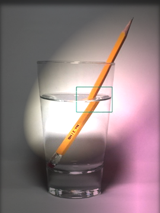

折射本章節中，我們將以光和水波介紹波的折射現象。 |
|
引言 |
|
|  | 左圖的筆是否斷開兩段呢？其實這是光的折射現象。 當一個波經過兩個不同介質時，將會發生折射現象。 原因是因爲兩者的折射率並不同 ，導致波的波速增加或減少，從而發生折射。 |
折射的發生在而在水中，較淺水的地方波長會較短，而由於水波的頻率不變， 波由深水區進入淺水區時，除了看到波長減少外，也會看到波出現偏折，如下圖： 而水波會向哪一個方向偏折呢？ 當水波由深水區向淺水區傳播時，波會偏向法綫； 反之，波將偏離法綫。
|
|
| 點我了解更多折射的應用 | |